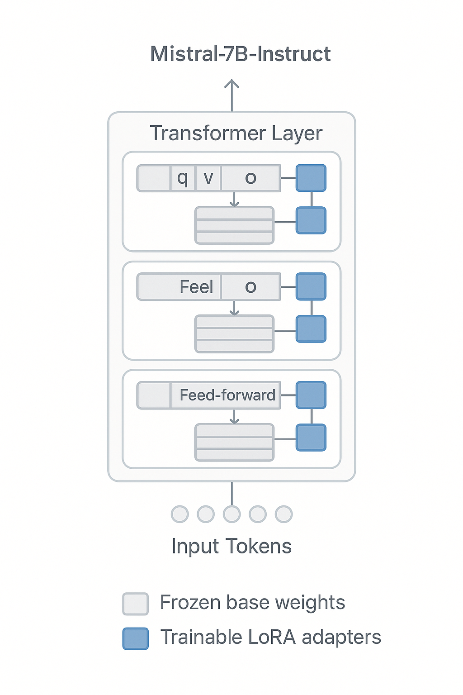

The AI Politician project develops fine-tuned language models that accurately simulate political figures' communication styles, rhetorical patterns, and policy positions through parameter-efficient adaptation. Our system enables natural dialogue interactions, structured debates, and fact-grounded responses using retrieval-augmented generation.
Abstract
Political discourse simulation presents unique challenges for language models due to the need for accurate representation of individual communication styles, consistent policy positions, and factual grounding. In this research, we introduce AI Politician—a system of fine-tuned Mistral-7B language models designed to recreate political discourse. We employ LoRA adapters and Retrieval-Augmented Generation (RAG) to enable efficient adaptation while maintaining factual accuracy. Our methodology combines parameter-efficient fine-tuning on political speech corpora with context-aware knowledge retrieval to produce coherent, personalized responses that maintain the distinct communication characteristics of specific political figures. We demonstrate the system's capabilities through one-on-one interactions, moderated debates, and issue-specific policy discussions, highlighting both the potential applications and ethical considerations of political AI simulations.
System Architecture
Data Processing
Text Corpus
Cleaning
Tokenization
Preprocessing
Model & Knowledge
Mistral-7B
LoRA Fine-tuning
Vector Embedding
ChromaDB
Response Generation
Query Analysis
Context Retrieval
Inference
Response Format
AI Politician System Architecture: (a) Data collection and preprocessing pipeline,
(b) Model fine-tuning and knowledge base integration,
(c) Query processing and response generation workflow
The AI Politician system integrates multiple components to deliver personalized political discourse.
The workflow begins with (a) collecting and preprocessing political speech data,
(b) applying LoRA fine-tuning to the Mistral-7B models and building the knowledge vector database,
and (c) orchestrating response generation through query analysis, context retrieval, and inference.
Methodology
Our approach consists of three integrated components: a personalized dialogue system, a debate management framework, and a contextual knowledge retrieval mechanism.
Model Architecture
The foundation of our system is the Mistral-7B-Instruct-v0.2 large language model. To adapt this model for simulating specific political figures, we employ parameter-efficient fine-tuning using Low-Rank Adaptation (LoRA). This approach enables the capture of nuanced individual communication styles and rhetorical patterns while substantially reducing the computational overhead associated with full fine-tuning. Specifically, our LoRA implementation utilizes adapters configured with a rank (r) of 8, a scaling factor (alpha) of 16, and a dropout rate of 0.05. These adapters are integrated into the Transformer architecture by targeting the query (`q_proj`), key (`k_proj`), value (`v_proj`), and output (`o_proj`) projection layers within the self-attention mechanism, as well as the gate (`gate_proj`), up (`up_proj`), and down (`down_proj`) projection layers within the feed-forward network components.

Illustration of LoRA adapter integration within a Transformer block, targeting specific projection layers.
Training Data Collection
We developed a specialized data collection pipeline to gather high-quality training data from various sources:
Public speeches and addresses
Interview transcripts and press conferences
Debate appearances and campaign materials
Policy statements and official communications
All collected data underwent rigorous preprocessing, including deduplication, quality filtering, and format standardization before being used for fine-tuning.
Knowledge Retrieval System
Our RAG implementation uses a vector database containing policy statements, biographical information, and historical records. The retrieval process employs:
Embedding model: all-MiniLM-L6-v2
Vector database: ChromaDB
Similarity metric: Cosine similarity
Context window: Dynamic sizing based on query complexity
Available Models
Explore our fine-tuned models. Interact directly via Hugging Face adapters or run locally with Ollama.
Trump Model
Fine-tuned to capture the distinctive communication style and rhetoric of Donald Trump.
The AI Politician project demonstrates the viability of creating specialized language models capable of faithfully simulating political discourse. Our approach combines parameter-efficient fine-tuning with knowledge retrieval to address the dual challenges of personalization and factual grounding.
While our current implementation focuses on two high-profile political figures, the methodology is extensible to a broader range of politicians and public figures. Future work will explore:
Expanding the model coverage to include additional political figures from diverse backgrounds
Implementing multilingual capabilities to simulate international political discourse
Developing more sophisticated debate frameworks for multi-participant scenarios
Enhancing the factual verification capabilities to improve reliability
Investigating methods to reduce potential biases in political simulations
We acknowledge the ethical considerations surrounding political AI simulations, including the potential for misuse and the importance of clear attribution. Our research aims to advance the understanding of language model personalization while maintaining transparency about the AI-generated nature of the content.
BibTeX
@misc{hill2024aipolitician,
author = {Hill, Natalie and Jones, Preston},
title = {{AI Politician: Fine-tuned Models for Political Discourse}},
year = {2024},
howpublished = {\url{https://aipolitician.org}},
note = {Project page available online. Code: https://github.com/SecretLabOU/aipolitician, Models: https://huggingface.co/collections/nnat03/ai-politician-680852b5f01da6e491803cdf}
}